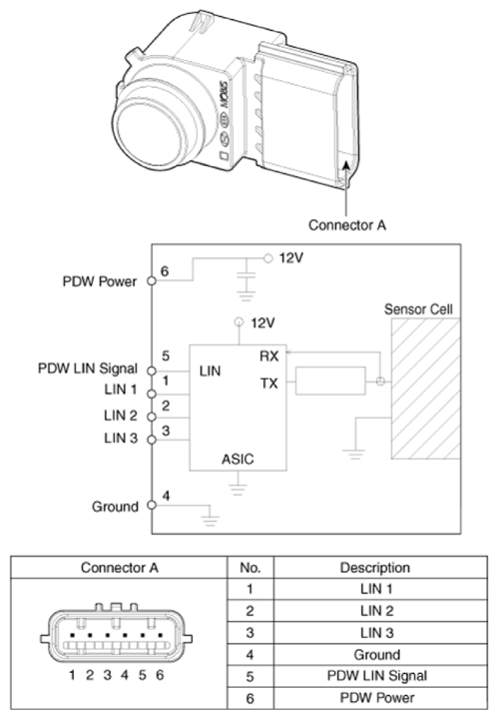

LEMON Manuals
: Even more car manuals for everyone: 1960-2025
Home
>>
Hyundai
>>
2022
>>
Elantra N Line, Standard Trans
>>
Repair and Diagnosis
>>
Accessories & Equipment
>>
Drivers Assistance Systems - ADAS
>>
Driver Parking Assistance System (Except HEV)
>>
Parking Collision-Avoidance Assist (PCA)
>>
Schematic Diagrams
>>
Parking Collision-Avoidance Assist (PCA) Ultrasonic Sensor
Parking Collision-Avoidance Assist (PCA) Ultrasonic Sensor
Fig 1: Parking Collision-Avoidance Assist (PCA) Ultrasonic Sensor Connector End View And Terminal Description

Courtesy of HYUNDAI MOTOR AMERICA